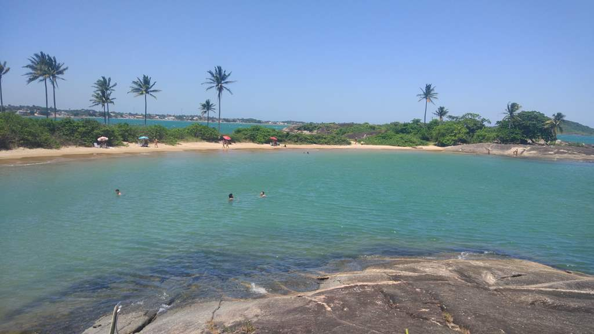
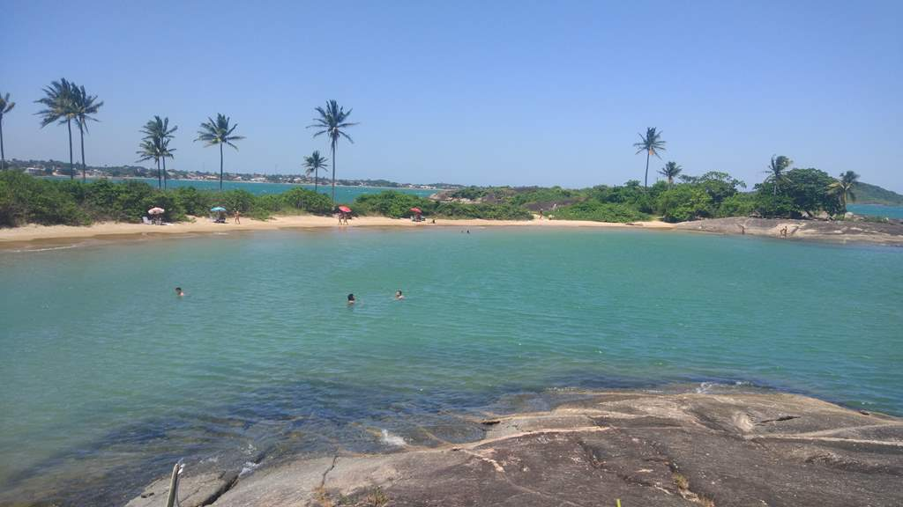

CURIOSIDADES 1 – Um dos maiores festivais de forró do Brasil Falou em forró pé-de-serra no Espírito Santo, falou de Itaúnas! A cidade, localizada no norte do Estado, sedia o Festival Nacional Forró de Itaúnas,
um dos maiores festivais do ritmo no Brasil, o que faz a cidade receber visitantes de todos os cantos do país e até mesmo do exterior. O evento tem atraído muitos olhares para a cidade, e faz ela se transformar, do clima bucólico e
relaxante para o movimento intenso e festivo no período; 2 – Segunda maior festa religiosa do Brasil Canela verde, como é apelidada, a cidade de Vila Velha guarda muitas curiosidades. Uma delas é que uma das maiores festas religiosas,
a Romaria dos Homens, acontece por aqui. A comemoração 3- Tem o terceiro ponto mais alto do Brasil: o Pico da Bandeira.


 
